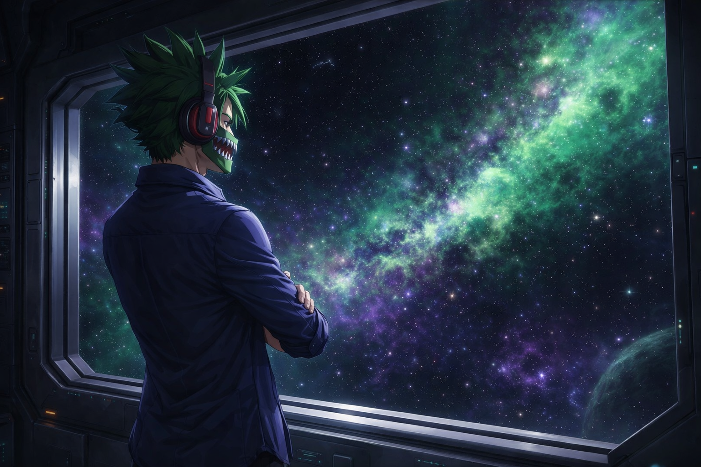

The Guardians’ Creation
After ascending as The Dark Star, Seron stood alone in a universe he forged from the ashes of the one he lost. Though his power was immeasurable, the weight of solitude was heavier than any cosmic burden. He had rebuilt existence — but he had no one to share the responsibility of protecting it.
Two worlds became the heart of his new reality: Guardia, a thriving civilization of warriors, and Zavara, a world of mystics, scholars, and star‑born innovators. Both planets were destined to become targets of cosmic threats — void remnants, astral predators, and forces drawn to Seron’s new creation.
Seron refused to let history repeat itself. He would not watch another universe fall. And he would not fight alone.
Channeling fragments of his own cosmic essence, Seron forged the first generation of The Guardians — beings chosen not for power, but for spirit. Each Guardian carried a spark of the Dark Star within them, granting abilities shaped by their will, identity, and purpose.
From that moment forward, the Guardians became the shield of Guardia and Zavara — protectors of the Prime Universe, defenders of the innocent, and the living legacy of Seron’s vow: that no world under his watch would ever fall to darkness again.